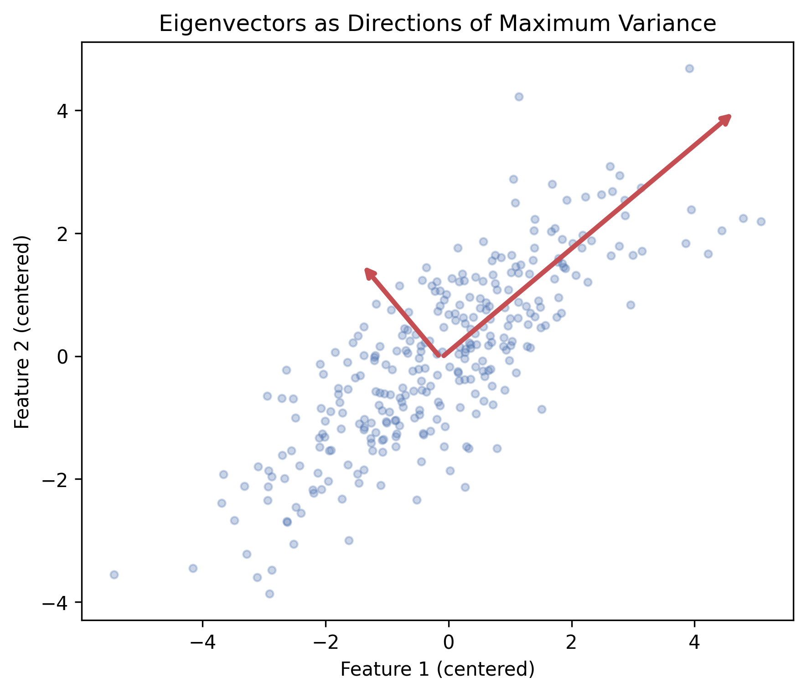
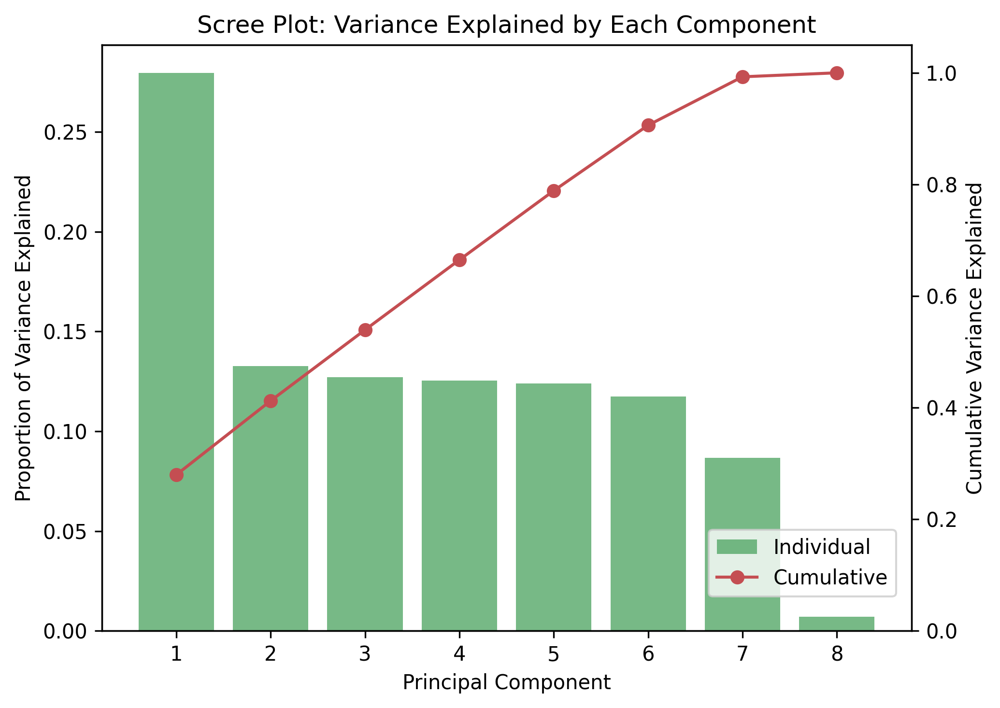
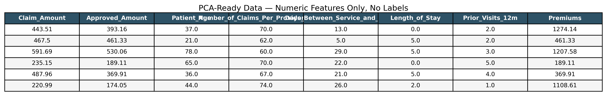
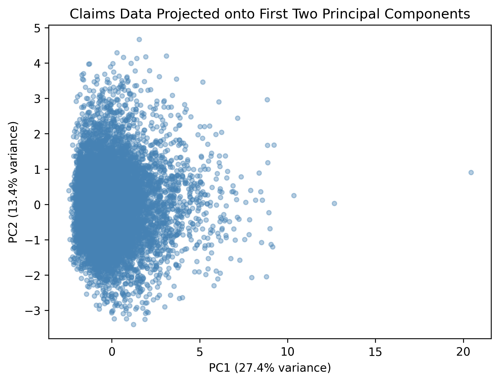
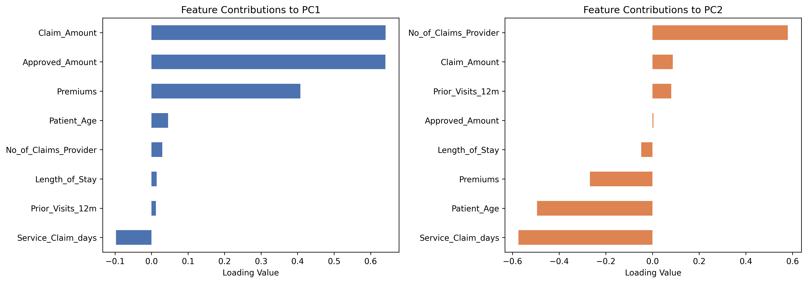
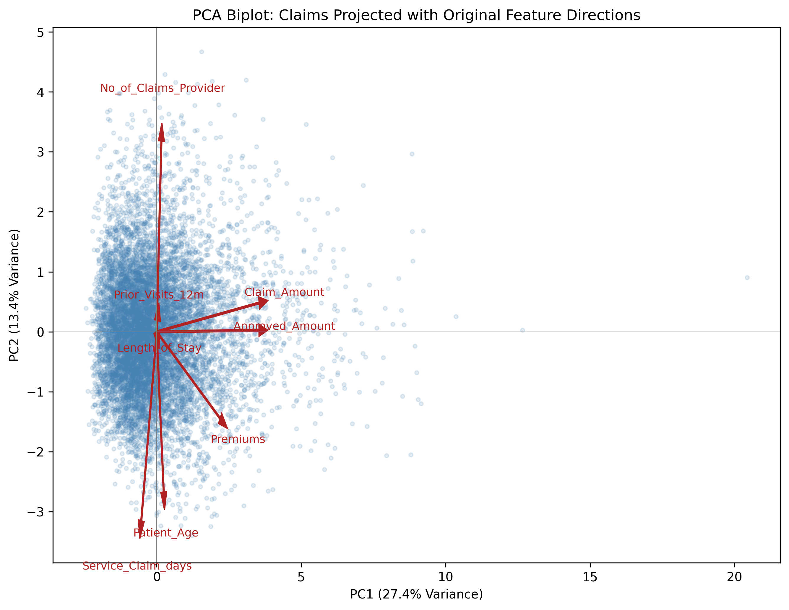

Principal Component Analysis
Principal Component Analysis
Overview
Principal Component Analysis, or PCA, is a technique used to simplify a dataset that has many numeric features by transforming it into a smaller set of new, artificial features called principal components, while still preserving as much of the original information, or variance, as possible. Rather than simply dropping columns, PCA creates entirely new variables, each one a specific weighted combination of the original features, ranked so that the first component captures the most variation in the data, the second captures the next most, and so on.
At the heart of how PCA works are two mathematical concepts: eigenvalues and eigenvectors. When PCA looks at how all the features in a dataset vary together, it's essentially looking at the relationships between every pair of features at once. An eigenvector represents a specific direction through that feature space, and the matching eigenvalue tells you how much of the data's total variation stretches out along that particular direction. PCA works by finding the eigenvector with the largest eigenvalue first, since that direction captures the most spread in the data, and that becomes the first principal component. The process then repeats for the next largest eigenvalue, and the next, each one perpendicular to the ones before it, until every bit of the original variation has been accounted for in a new, reordered set of directions.
This process is what's known as dimensionality reduction, the act of taking a dataset with many features and representing it using fewer dimensions without losing much of the meaningful information it contains. Reducing dimensionality matters for a few practical reasons. High-dimensional data, meaning a dataset with many columns, is genuinely harder to analyze and visualize. A human being can easily look at a 2D scatter plot or even a 3D plot, but there's no way to directly visualize eight or more dimensions at once. High-dimensional data can also suffer from something often called the curse of dimensionality, where relationships between points become harder for models to detect simply because there's so much space for the data to spread out into, and features can become redundant or correlated with one another in ways that make models less stable or harder to interpret. By reducing many original features down to a small number of principal components, PCA makes it possible to visualize complex, multi-feature data in a simple 2D or 3D plot, while also potentially simplifying the input going into other models.


Data Prep
Like clustering, PCA requires numeric, unlabeled data, since it works by calculating variance and covariance across features, calculations that only make sense for numbers, not categories or text labels. Columns like Insurance_Type, State, and Is_Fraud were excluded from this input for the same reason they were excluded from clustering: PCA has no way to mathematically interpret a category the way it can interpret a number.
The same numeric feature set used for clustering was reused here: Claim_Amount, Approved_Amount, Patient_Age, Number_of_Claims_Per_Provider_Monthly, Days_Between_Service_and_Claim, Length_of_Stay, Prior_Visits_12m, and Premiums. As with clustering, every feature was standardized before running PCA, since PCA is highly sensitive to scale, a feature with a larger numeric range would otherwise dominate the calculation of variance even if it isn't actually more important.
Link to the PCA-ready sample data (CSV): pca_data.csv

Results
Running PCA on the scaled numeric claims data produced the results shown in the scree plot and 2D scatter plot already generated earlier in this tab. The first principal component (PC1) captured about 27.4% of the total variance, and the second (PC2) captured about 13.4%, meaning the first two components together account for only around 41% of the information in the original 8 features. The scatter plot of claims projected onto PC1 and PC2 shows one dense, heavily overlapping cluster of points near the origin, with a long, thin tail of outlier claims stretching out along the PC1 axis.

Beyond just plotting the claims themselves, it's also useful to understand what each principal component actually represents in terms of the original variables. This is done by looking at each component's loadings, the weight each original feature contributes to that component.

Claim_Amount, Approved_Amount, and Premiums, the dollar-based cost variables, while every other feature contributes only marginally. PC2 tells a different story, dominated instead by Number_of_Claims_Per_Provider_Monthly (positive direction) and Days_Between_Service_and_Claim (negative direction), with Patient_Age playing a smaller secondary role. This is a genuinely clean and interpretable split: PC1 behaves like a “cost” axis, and PC2 behaves like a “frequency and timing” axis, two concepts that map almost directly onto this project's central theme of claim severity versus claim frequency.
Claim_Amount, Approved_Amount, Premiums) all point in a tightly clustered direction along PC1, confirming they move together and are essentially measuring the same underlying idea. Meanwhile, Number_of_Claims_Per_Provider_Monthly and Days_Between_Service_and_Claim point in nearly opposite directions along PC2, showing those two features pull the data apart in a completely different way than the cost variables do.Conclusions
| Principal Component | Variance Explained | Cumulative Variance Explained |
|---|---|---|
| PC1 | 27.37% | 27.37% |
| PC2 | 13.37% | 41.05% |
| PC3 | 12.80% | 53.54% |
| PC4 | 12.63% | 66.18% |
| PC5 | 12.41% | 78.59% |
| PC6 | 11.72% | 90.30% |
| PC7 | 8.98% | 99.29% |
| PC8 | 0.71% | 100.00% |
What this PCA work reveals, in the context of this project, is genuinely informative in two different ways. First, the loadings themselves confirm something this project has been building toward all along: the numeric features in this dataset really do separate cleanly into a cost-related group (Claim_Amount, Approved_Amount, Premiums) and a frequency/timing-related group (Number_of_Claims_Per_Provider_Monthly, Days_Between_Service_and_Claim), and PCA found that distinction entirely on its own, without being told anything about severity or frequency in advance. That's a meaningful, data-driven confirmation of this project's central framing.
Second, and just as important to report honestly, PCA did not meaningfully reduce the dimensionality of this dataset. It took all 8 components combined to reach 100% of the variance, with no small handful of components capturing the bulk of it, each component after the first contributing a fairly similar, modest share. This lines up directly with the weak correlations seen earlier in this project's EDA correlation heatmap: PCA compresses data well when features are redundant or correlated with one another, and since these features mostly aren't, there wasn't much redundancy for PCA to compress in the first place. Rather than being a disappointing result, this is a legitimate and useful finding, it suggests that each of these 8 features is carrying genuinely distinct, non-overlapping information, which actually supports the case for keeping the full feature set intact for the regression and ensemble modeling planned later in this project, rather than trying to simplify it down to just one or two components first.